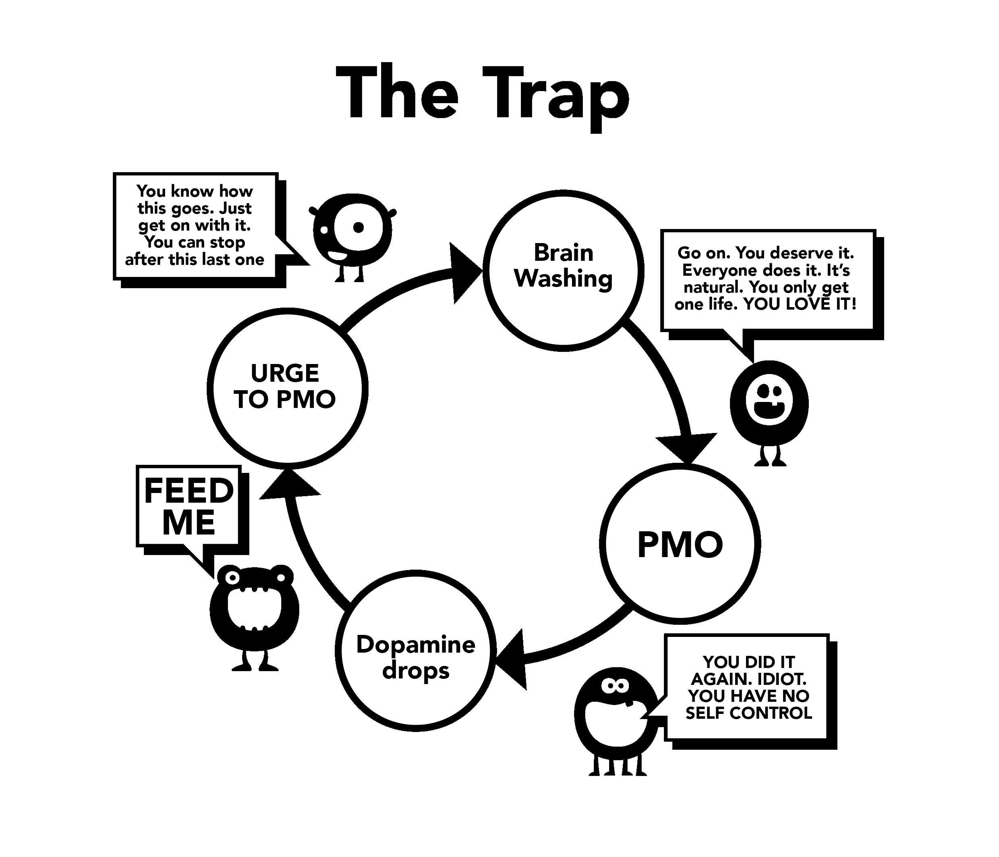

第5章 Brainwashing 洗脳¶
これが、我々がポルノを使い始めるニ番目の理由である。この洗脳を完全に理解するためには、まず、超自然的な刺激の強力な効果を、検証する必要がある。我々の脳は、単純に、「オンラインハーレム」の創造に対し無防備なので、我々は15分間で、我々の祖先たちが数度の生涯で出会ったよりも多い配偶者候補の間を行き来することを許されてしまう。
過去には、酷く間違った助言が存在した、例えば、自慰をすると目が見えなくなる。これは、これ以外の脅し戦術も含め、明らかにやり過ぎであった。この様な誤認識が科学によって倒されたのは当然である。しかし、風呂の湯と赤子を一緒に捨ててしまっている（＊大事なものまで一緒に捨ててしまっている）、幼少期より我々の潜在意識は、性的なメッセージ（情報）と画像の爆撃を受けている、雑誌と広告は、性的ほのめかしが詰め込まれている。いくつかのポップミュージックの動画は、極めてサジェスティブ（性的暗示）である、だが絶望しないでほしい、彼らがどのような構成要素を使っているかを特定するゲーム（遊び）にしてしまおう、それはショックバリュー（衝撃性）、新奇さ、色、大きさ、禁忌、などなど、だろうか。このようなゲームは、9歳から12歳の子供にも、教育の一環として、教えることも可能である。
その核心の、メッセージ（込められた情報）は、「地上で最も貴重なもの、私の最後の思考と行動は、オーガズムである」。大袈裟に言っているのではない、どんなテレビや映画の脚本でもいい、見てみれば、五感（感触、匂い、声）とセックスの生殖的（オーガズム的）部分の混ぜ合わせが目に入るだろう。この影響は我々の意識には記録されない、だが、潜在意識はそれ吸収する時間を持つ。
Scientific Reasoning 科学的説明¶
逆方向の宣伝も存在する、性的機能不全になるという脅し、やる気の消失、現実の女性よりバーチャルなポルノを好むこと、YourBrainOnPorn（＊ゲイリー・ウィルソンによるインターネットポルノ依存症についての本）、様々なインターネットのサブカルチャー、だが、これらの運動は、実際に、人々にポルノの使用をやめさせることはない。理論的には、それらはポルノの使用をやめさせられる筈だが、単純な事実としてそうはなっていない。YourBrainOnPornに掲載されている、査読された研究に基づく健康リスクのリストでさえ、思春期の若者がポルノの使用を始めることを止められない。
皮肉なことに、この困惑における最も強力な軍勢は、ポルノ使用者自身なのである。ポルノ使用者が、意志が弱い、もしくは、身体的に弱い人たちである、というのは誤解である。依存症の存在に気が付いた後、依存症に対処するためには、身体的に強くならなくてはならない。恐らく、最も痛ましい部分は、ポルノ使用者たちは、自分を失敗した敗北者で酷く内向的と考えることだろう。友人はもっと人に興味を持っただろう、もし、彼が自慰を求めたことで自分を卑下していなければ。

ーーー 翻訳：The Trap 「罠」という円環図
PMOへの欲求（Pornポルノ、Masturbationマスタベーション、Orgasmオーガズム）
↓
「どうなるかわかってんだろ。いいからとっととやっちまえよ。これを最後にやめられるさ。」
↓
洗脳
↓
「そうだやれ。いいんだよ。みんなやってる。自然なことなんだよ。人生は一度しかない。＜お前の大好きなことじゃないか＞」
↓
PMO
↓
「またやっちまったな。バカ。自制心がない。」
↓
ドーパミン低下
↓
「くれ！」
↓
PMOへの欲求
↓
以下円環する。 ーーー
The Problem Using Willpower 意志の力を用いることの問題点¶
意志の力を使う方法でポルノをやめようとしているポルノ使用者たちは、自分の意志の力のなさを責め、自分の平穏と幸福を台無しにする。自制の失敗と自己嫌悪は違う。結局のところ、セックスの前には毎回必ず勃起し、正しく興奮し、パートナーを満足させることをあなたに求める法律はない。我々が、今、取り組んでいるのは依存症であって、習慣ではない、ゴルフの様な習慣をやめるように自分と議論したことはないだろう、だが、ポルノ中毒については同じこと（自分と議論をする）のは普通のことだとされている、なぜなのか？
超自然的刺激に、常に、曝されることで、あなたの脳は再配線される、なので、洗脳への抵抗性を獲得することが重要になる、中古車販売業者から中古車を買う時のように、丁寧に相槌を打ちながら相手の言う事は一言も信じないようにする。ということで、出来る限り多くセックスをしなければならない、その全ては飛び抜けて素晴らしい、それができない時にはポルノを使用する、ということを信じないでほしい。
セーフポルノゲーム（安全ポルノゲーム）もしないでほしい、あなたの小さな怪物があなたを誘うためにこのゲームを作った。素人ポルノは権威の認証を受けているか？ポルノサイトはユーザーからデータを収集し、ユーザーの需要を満たすために使う、あるカテゴリーの伸びがあればそこに注目し、可能な限り速やかに、そのコンテンツを供給する。教育目的や「安全な」女性向け動画などに騙されてはいけない。自問してほしい、「なぜ自分はこんな事をしているんだろうか？本当に自分はこれが必要なのか？」
＜もちろん、そんなわけない！＞
ほとんどのポルノ使用者は、誓う、自分は静的でソフトなポルノしか見ない、ゆえに問題ないと、実際には、彼らは手綱を振り切って飛びつきたい、意志の力で誘惑と戦っている。これを限度を超えて何度も長時間やると、意志の力は相当に減少し、彼らは、それ以外の人生のやるべきこと（意志の力が大事になる、運動やダイエットなど）で失敗し始める、それらの分野での失敗は、彼らに惨めさと罪悪感を感じさせ、滝から流れ落ちるようにポルノへと蹴り戻される。それをしなかった場合は、彼らは自分の怒りと憂鬱を、愛する人に対して、理不尽にぶち撒けるだろう。
一度、インターネットポルノの中毒者になってしまったら、この洗脳は強まる。あなたの潜在意識は、小さな怪物に餌をやらなければならないことを知っており、それ以外のすべてを遮断する。人々をポルノをやめることから遠ざけ続けているのは、恐怖である、自分の脳にドーパミンの洪水を起こすことをやめた時に感じるあの空虚で落ち着かない気持ちに対する恐怖である。あなたに自覚がないからと言って、それがそこに存在しないということにはならない。猫が床暖房の温水パイプの場所を理解する以上の理解をあなたは必要としない、猫は、ただ、ある場所に座ると温かく感じる、ということを知っているだけ。
Passivity 受動性、受け身、他者に委ねる¶
我々の精神の受動性と権威への依存によって洗脳へと至っていることが、ポルノをあきらめる困難さの主な原因である。我々が社会の中で受けた躾、それが自分のポルノ依存症の洗脳によって強化され、最も強力なもの（友人、親族、同僚）と組み合わさる。「あきらめる」という言葉は、古典的な洗脳の一例である、本当の犠牲を暗示している。美しい真実とは、あきらめるものなど何もない、ということである、それどころか、あなたは酷い病気から開放される、そして素晴らしいポジティブな恩恵を得る。我々はこれからこの洗脳を解除する、まず、「あきらめる」と言う代わりに、やめる（止める）、やめる（辞める）、もしくは、恐らくは真に適切な、＜脱出する＞、と言うことにする。
最初に、我々をポルノを使うように説得した唯一のこと、それは、他の人がそれをしている、ということ、それは我々を見逃している気持ちにさせた。我々は、勤勉に努力して中毒になろうとする、にも関わらず、我々には彼らが一体何を逃すまいとしているのか、絶対にわからない。我々が別の動画を見るたび、そこには何かがあるのだと確信する、そうでなければみんなポルノをやってないだろう、ポルノ産業がこんなに巨大になっていないだろう、と。この習慣をやめた時でさえ、その元ポルノ使用者は、パーティーや社交行事において、セクシーなエンターテイナーや歌手、もしくは、ポルノの人気俳優に関する話題が持ち上がった時に困窮を感じる。「友人みんなが話しているってことは、そんなに良いのか？オンラインに無料で見れる写真はないかな？」、彼らは安心する、今夜はチラ見だけにするだろう、そして気付かないうちに、彼らは再び中毒になっている。
この洗脳は極めて強力である、そして、あなたはこの影響について自覚する必要がある。テクノロジーは成長を続け、未来は、飛躍的に高速なサイトとアクセス方法を連れてくるだろう。ポルノ産業は、仮想現実に巨額の投資をして、「本当にほしいものが手に入らない時の次善のもの」、にしようとしている。我々は、自分たちがどこに向かっているのか知らない、現代のテクノロジー、もしくは、未来に来るものに対抗するには、装備が足りていない。
我々は、この洗脳をもう少しで解除しようとしている、困窮しているのは非ポルノ使用者ではなくポルノ使用者なのだ、ポルノ使用者はその代償として生涯において次のものを失う、
・健康
・エネルギー
・富
・心の安らぎ
・自信
・自尊心
・幸福
・自由
これだけの犠牲から一体彼らは何を得るのか？＜全く何も得られない＞、（非ポルノ使用者たちが常に謳歌している）安らぎと静謐と自信がある状態に戻ろうとしているという幻想を除いては。
Withdrawal Pang ウィズドゥローアル・パング 禁断症状発作¶
前にも説明したように、ポルノ使用者たちは、ポルノを、楽しみやリラックス、もしくは何らかの教育として使っていると信じている。実際の理由は、禁断症状発作を緩和するためである。我々の潜在意識は、ある特定の時に行われるインターネットポルノと自慰は、気持ち良くなる傾向にある、と学習し始める。この麻薬の中毒化の進行に伴い、禁断症状発作を緩和する必要性も増加する、この巧妙な罠は、あなたをさらに深みに引き摺り込む。この過程は、とてもゆっくりと進行するので、あなたは気づかない、ほとんどの若者は、やめようと思い立つまで、自分が依存症になっていることに気づかない、そう思い立ってもなお、自分が依存症であることを認めようとしない。
あるセラピストと数百人の十代（13歳から19歳）の若者との会話を見るといい：
ーーー
セラピスト：「あなたは、インターネットポルノが麻薬であり、あなたがそれを使う唯一の理由は、あなたがやめることができないからだ、と気付いているね」
患者：「バカげたことを！自分はポルノを楽しんでいる、そうじゃないならやめてる」
セラピスト：「一週間だけやめてもらって、私にやめようと思えばやめられることを証明して」
患者：「その必要はない、自分は楽しんでいる。やめたいと思ったらやめるよ」
セラピスト：「一週間だけやめてもらって、自分は依存症ではないと自分自身に証明して」
患者：「何が言いたいんだ？自分はポルノを楽しんでいる！」
ーーー
すでに述べたように、ポルノ使用者は、ストレスや退屈、集中、もしくは、その組み合わせを感じた時に、禁断症状発作の緩和を行う傾向にある、我々はこれから洗脳のこの部分に焦点を当てる。